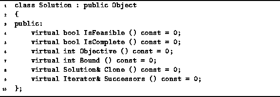

Data Structures and Algorithms
with Object-Oriented Design Patterns in C++
Data Structures and Algorithms
with Object-Oriented Design Patterns in C++This section presents an abstract base class for representing the nodes of a solution space. By defining an abstract interface, it is possible to hide the details of the specific problem to be solved from the backtracking algorithm. In so doing, it is possible to implement completely generic backtracking problem solvers.
Although a backtracking algorithm behaves as if it is traversing a solution tree, it is important to realize that it is not necessary to have the entire solution tree constructed at once. Instead, the backtracking algorithm creates and destroys the nodes dynamically as it explores the solution space.
Program  defines
the abstract class called Solution.
The Solution class is intended to serve as
the base class from which problem-specific classes are derived.
Each Solution instance represents a single node
in the solution space.
defines
the abstract class called Solution.
The Solution class is intended to serve as
the base class from which problem-specific classes are derived.
Each Solution instance represents a single node
in the solution space.

Program: Solution Class Definition
The Solution class is derived from the Object base class. Consequently, instances of the Solution class can be inserted in the various containers discussed in the preceding chapters. The Solution class adds the following functions to the inherited interface:
.
 Copyright © 1997 by Bruno R. Preiss, P.Eng. All rights reserved.
Copyright © 1997 by Bruno R. Preiss, P.Eng. All rights reserved.